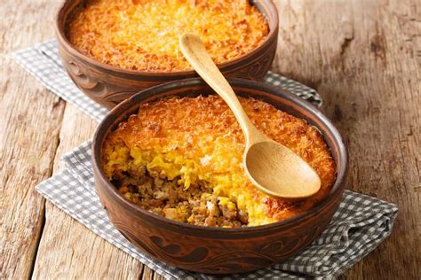
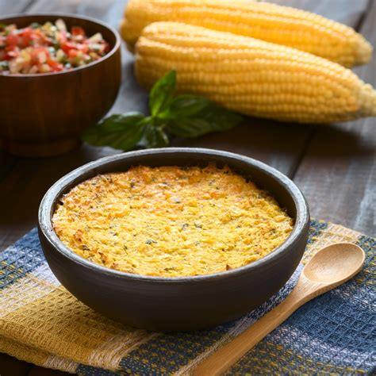

Restaurant de comida típica chilena que busca dar un ambiente hogareño
para otorgar una experiencia auténtica de cultura chilena a su mesa.
Menú
Platos de fondo
Selección de platos típicos chilenos.
Nombre plato
Precio
Pastel de choclo
$5.500
Charquicán
$5.000
Bistec a lo pobre
$5.500
Porotos con rienda
$5.000
Postres
Selección de postres artesanales típicos chilenos.
Nombre postre
Precio
Leche asada
$4.000
Pie de limón
$4.500
Flan
$4.000
Picarones
$4.000
Bebidas
Selección de bebestibles para acompañar su comida.
Nombre bebida
Precio
Jugo natural
$1.300
Bebida
$1.000
Té
$800
Café
$1.000
Cerveza artesanal
$3.000
Vino nacional
$4.000
Vino importado
$4.500
Especialidades
Congrio frito más acompañamiento => $7.500
Trozo de congrio apanado frito en sartén a la mantequilla, con acompañamiento a
elección entre arroz graneado, papas cocidas, papas salteadas, papas fritas, puré
de papas, salteado de verduras o ensalada. (El tipo de acompañamiento no afecta el precio final).
Asado a las brasas => $8.000
Selección de carnes surtidas entre pollo, cerdo y vacuno, con longanizas y papas cocidas,
servidas en una fuente sobre un pequeño brasero.
Promociones especiales
Bistec a lo pobre + Bebida => $6.000
Charquicán + Cerveza artesanal => $6.500
Plato de la semana
Pastel de choclo
Servido tradicionalmente en un pote de greda, consiste en una base de carne picada con salteado de cebolla,
ajo y aliños, sobre la que reposa una pasta de choclo molido cuya superficie está gratinada
con queso.


Si quieren hacer este plato en casa, pueden seguir la siguiente receta haciendo click
aquí.